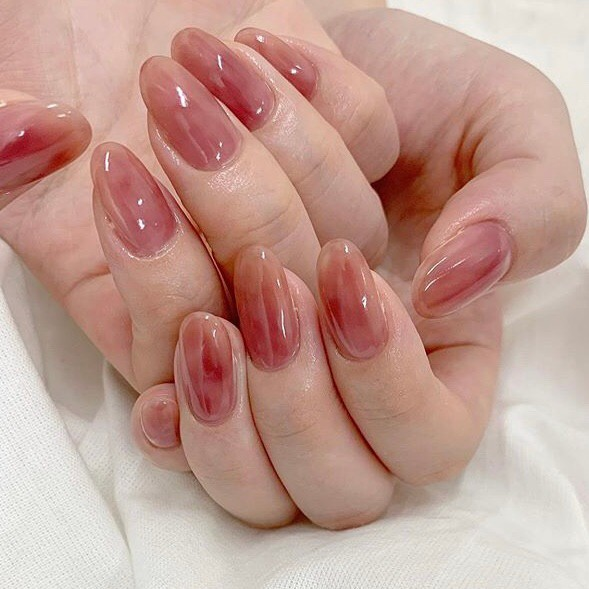

ABOUT NAIL
SELF NAIL
下準備・プレパレーション
1. 爪の長さ・形を整える
エメリーボードで爪の長さと形を整えます。エメリーボードは往復でかけるのではなく、一定方向に動かしましょう。
2. 甘皮処理をする
コットンを巻いたウッドスティックまたはプッシャーを使い甘皮をやさしく押し上げます。
3. サンディングをする
スポンジバッファーで爪の表面全体をファイリングします。爪の表面を傷つけることで、ジェルの密着が良くなり長持ちします。ガラスに書たいらすぐ消えるペンでも、曇りガラスに書いたらなかなか落ちませんよね！

4. 汚れのふき取りをする
消毒剤をコットンに含ませて、爪の油分や水分、ダスト、汚れを 拭き取ります。これでプレパレーションの完了です！
基本の塗り方
1. ベースジェルを塗る
クリアジェルを筆にとり、筆先を使いながら爪の生え際から先端に向かってジェルを塗ります。はみ出しを防ぐために甘皮から髪の毛一本分程度あけましょう。サイドも塗り残しがないようにしましょう。
2. 爪の断面にも塗る
爪の断面（エッジ）までしっかりと塗ります。断面まで塗っていないと、先端から剥がれて長持ちしない原因になります。また、ジェルが皮膚や甘皮についた場合はウッドスティックで除去してください。
3. LEDライトで硬化する
ジェルを塗り終わったらはみ出している箇所がないか確認をし、ライトで60秒硬化します。この時にジェルが流れないよう手はまっすぐライトの中央あたりに入れましょう。
4. カラージェルを塗る
カラージェルは爪楊枝などで空気が入らないよう底から混ぜます。 カラージェルをブラシの片面だけにとり、全体に伸ばします。爪の断面も忘れずに塗りましょう。
5. LEDライトで仮硬化する
はみ出した部分はウッドスティックで取り除きます。ライトで30秒仮硬化をします。
6. カラージェルを二度塗りをし、LEDライトで仮硬化する
ジェルを塗り重ねます。薄いカラーの場合は3度塗りしましょう。一度で良い発色を求めて多くのジェルを塗ると、固まり切らない可能性があります。確認したらライトで30秒仮硬化します。
7. トップジェルを塗る
カラージェルをコーティングするようにトップジェルはたっぷり乗せましょう。爪の断面（エッジ）も忘れずに塗りましょう。
8. 未硬化ジェルをふき取って完成！
ジェルクリーナーをコットンまたはネイルワイプに含ませ、の表爪面に残った未硬化ジェル（ジェルのベトつき）を拭き取ります。一度使った面は使わずに、違う面で拭いていきましょう。
オフのやり方
1.ジェルを削る
ジェリーリムーバーがしみこみやすいよう、ツヤがなくなるまでジェルの表面を軽く削ります。自爪まで削らないように注意してください。
2. ジェルリムーバーを含ませたコットンをのせる
コットンを爪の大きさにハサミでカットし、ジェルリムーバーを含ませ爪の上にのせます。ジェルリムーバー(アセトン)を使用するときは必ず換気を行い、肌につかないようにしてください。
3. アルミホイルで包み10分～15分待つ
ジェルリムーバーが蒸発しないようアルミホイルで包み、10分～15分待ちます。
4. ジェルをウッドスティックで除去する
ウッドスティックなどで、ふやけたジェルを取り除きます。この時ジェル無理やり爪から剥がさないでください。1回で取れない場合は[2]～[4]の作業を繰り返します。
5. 保湿して完成！
ダストを落として、ハンドクリームやキューティクルオイルで保湿をしてオフ完了です。この後ジェルを塗る場合は、プレパレーションからスタートしましょう。
GALLERY
- 